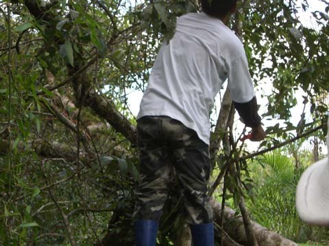

peru
iquitos
rather than taking the bus we flew to iquitos. mainly because it's the biggest city that doesn't have any roads to it. we could have spent a fortnight on a dodgy boat but well.... maybe next time... since there are no roads coming in there are more motorbikes than cars.
half a day upriver in a boat and we got to the wonderful
muyuna lodge
deep in the amazon.
recent rains meant the river was up. we spent about four hours our of four days on land with the rest was spent in canoes. i haven't worn gumboots in yeeeears.
our personal guide was the incredibly knowledgable moses. a local lad he knew the sound of everything we could hear and could point out a green bird in the bushes long before we could even see it.

when he wasn't pointing things out he was waving his magic tree-be-gone wand (aka his machete)
we saw lots of animals. first up are some tiny bats. can you
see
them?
this is best sloth photo i could manage. (note: that most of these photos are taken through our hand held binoculars)
here's a big lizard...
a night monkey...
some prehistoric birds...
a toucan...
and some dolphins. that's right, pink nosed river dolphins. (i didn't even know the amazon had dolphins. we saw them but they were in and out of the water too quick for a photo. oh wait,
there's one!.
it wasn't just animals, there were plenty of plants, including these giant metre wide lillies.
we spent a bit of time on land but, my goodness, the mosquitos! they were swarming everywhere. i didn't spray deet on my ankles and they got down into my gumboots and went for it. i had little scars now from scratching the evil scabs. bastards!!
the locals technically live on land but from time to time the river takes the land back.

here's the village prison. the mayor can throw anyone in here for 24 hours if they misbehave. if they are left in for longer then they can throw the mayor in for 24 hours.